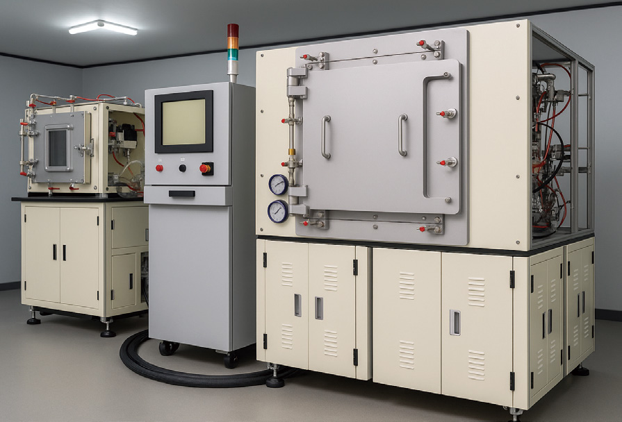

폐타이어 열분해 공정의 투입물/제품/부산물
회수 산출물
폐타이어 열분해 공정의 투입물/제품/부산물
- Waste Tire Chip
열분해 공정의 원료로 사용되는 파쇄 폐타이어입니다.
- Recovered Carbon Black (rCB)
열분해 후 생성되는 고형 잔사로, 안료 및 고무 보강재 등 다양한 용도로 활용 가능한 소재입니다.
- Pyrolysis Oil
고발열량 액체 연료로, 중유 대체 연료 또는 화학 원료로 활용될 수 있습니다.
- Recovered Steel Wire
회수 철심은 자력으로 분리하여 압축(베일링)한 뒤, 제강용 재활용 스크랩 등으로 판매됩니다.
- Pyrolysis Gas
발생한 열분해 가스는 스크러빙 시스템을 통해 정화되며, 보일러 등 추가 에너지원으로 활용할 수 있습니다.
- Recovered Fiber (Polyester / Nylon / Rayon)
분리된 폴리에스터/나일론/레이온 섬유는 압축(베일링)하여 연료 또는 단열 충전재 등으로 활용됩니다.
PES Microwave heating System(Batch Type)
본 PES 마이크로웨이브 가열 시스템은 배치형 설비로, 제어된 마이크로웨이브 에너지로 정밀한 열처리를 수행합니다.
소재 경화, 복합 폴리머 처리, 의료폐기물 멸균 등 다양한 분야에 적용됩니다.
균일한 전계 분포와 에너지 효율을 갖추고, 디지털 HMI(휴먼-머신 인터페이스)를 통한 공정 모니터링을 지원합니다.
신뢰성과 범용성을 고려해 설계되었으며, 다양한 산업·연구 환경에서 고온 운전과 처리 시간을 안정적으로 제공합니다.

사진
